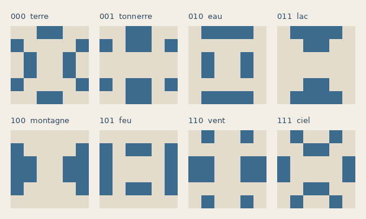
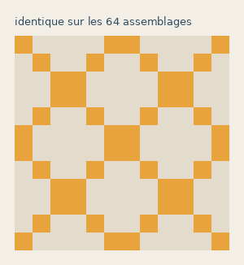
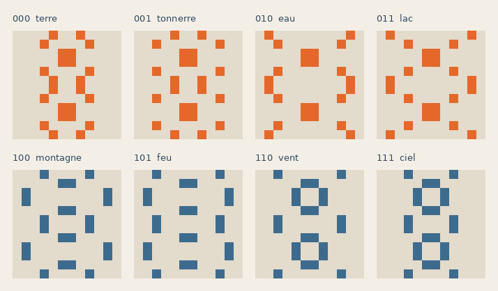
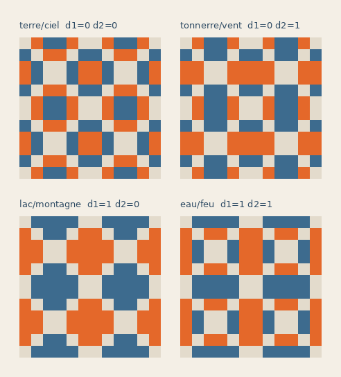
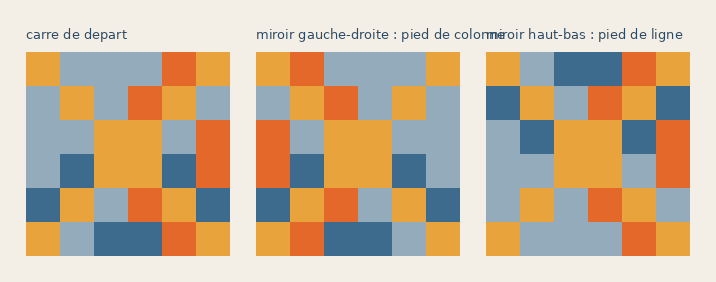

Les formes et les figures : une transcription
Par Anibal Edelberto Amiot — Publié le 8 octobre 2026
Sommaire
Vérifier
Chaque énoncé chiffré de ce texte qu'un script recalcule est suivi de la commande correspondante. Les sept vérificateurs se relancent d'une seule commande, depuis la racine du dépôt ; elle échoue dès que l'un d'eux échoue :
python tools/verifier_formes_figures.py
Les énoncés vérifiés et les lignes que chaque script doit imprimer sont rangés dans data/resultats-etablis.json.
Le résultat
Les 256 carrés d'ordre 6 de La Livrée d'Hermès se rangent sur un damier 16 × 16 dont la ligne et la colonne valent chacune un tétragramme. Chacun des quatre traits de ces tétragrammes a une contrepartie géométrique sur les carrés eux-mêmes, et la correspondance est exacte sur les 256.
| ce qui est écrit | ce qui le porte |
|---|---|
| les trois traits du trigramme | la forme bleue de la superposition inhale + exhale, écrite du bord vers le centre |
| les deux jonctions du trigramme | l'échange du bleu et du rouge entre colonnes opposées |
| la jonction cœur-ventre seule | le recouvrement de la forme bleue à la demi-période, 0 case ou 2 |
| le nombre de jonctions, et le pied | la constante de ligne, par une formule fermée |
| le pied | le miroir du carré, gauche-droite pour la colonne, haut-bas pour la ligne |
Il n'y a plus d'analogie de disposition nulle part. Chaque énoncé est une égalité vérifiable sur les données, et les cinq se vérifient ensemble.
Le fait saillant, qu'on ne pouvait pas deviner : le trigramme est porté par la forme, le pied par l'orientation. Les trois premiers traits se lisent dans le dessin, le quatrième dans la façon dont le dessin est retourné. C'est pourquoi aucune mesure de la forme ne rendait jamais le pied.
Les objets
Le corpus est celui de data/referent_256_v3.json : 256 carrés d'ordre 6, quatre couleurs par carré — rouge, bleu, gris et jaune — réparties 6, 6, 12, 12 sur les trente-six cases, sans exception. Ils occupent la planche 047 en damier 16 × 16.
Quatre carrés voisins 2 × 2 forment un assemblage d'ordre 12. Les 64 assemblages occupent un damier 8 × 8 ; c'est la galerie Magic quadricolore, et ce sont les pages 053 à 058.

Inhale et exhale sont deux fenêtres sur le même pavage. Un assemblage se répète de période 12 dans les deux sens ; inhale en prend une fenêtre, exhale celle qui est décalée d'une demi-période en ligne et en colonne (page 052). Leur superposition, pages 058 et 059, est l'assemblage réuni à son décalé de six cases en diagonale.

Cette réunion se lit comme une forme et non comme une somme, parce que la forme bleue et sa décalée ne se recouvrent jamais : 0 case commune sur les 64 assemblages, réunion de 48 cases, exactement le double. Il en va de même du rouge.
python tools/verify_cle_damier.py
Enfin, la ligne et la colonne du damier 16 × 16 valent chacune un tétragramme, et celles du damier 8 × 8 un trigramme : la projection de l'un sur l'autre est la chute du pied, deux colonnes pour une.
Le protocole, en vocabulaire standard
Les quatre couleurs sont un étiquetage des cases en quatre classes. La case (r, c) d'une grille n × n reçoit, selon sa classe, l'un des quatre entiers
B(r, c) = nr + c + 1, R(r, c) = n² + 1 − B(r, c),
V(r, c) = nr + (n − 1 − c) + 1, J(r, c) = n² + 1 − V(r, c).
C'est la méthode de la table de motifs, dite criss-cross, portée de deux classes à quatre : la version à deux classes, qui n'emploie que B et R, n'est documentée que pour les ordres doublement pairs.
Chaque valeur est de la forme αr + βc + γ, avec α = +n pour B et V, −n pour R et J ; β = +1 pour B et J, −1 pour R et V. Pour qu'une somme de ligne ne dépende pas de r, les α doivent s'annuler ; pour qu'une somme de colonne ne dépende pas de c, ce sont les β. D'où deux conditions d'effectifs, valables à tout ordre :
dans chaque ligne : B + V = R + J = n / 2
dans chaque colonne : B + J = R + V = n / 2
L'ordre doit donc être pair, et c'est la seule contrainte que ces conditions imposent. Les 256 carrés les vérifient, 256 sur 256, et sont magiques diagonales comprises, 256 sur 256.
python tools/protocole_general.py
Ces conditions sont nécessaires, non suffisantes : un étiquetage tiré au hasard qui les respecte n'est pas magique, les sommes de positions réglant ensuite la constante et les deux diagonales. Le contenu du procédé est donc dans la règle qui engendre les étiquetages, pas dans ces deux égalités.
La méthode : pavage et miroirs
La règle qui engendre les étiquetages est un pavage par miroirs alternés, et elle ne s'arrête à aucun ordre.
Soit E un étiquetage d'ordre 6 du corpus et m ≥ 1. On pave une grille d'ordre 6m avec m × m copies de E, celle du bloc (i, j) étant E si i et j sont pairs, son miroir gauche-droite si j est impair, son miroir haut-bas si i est impair, son demi-tour si les deux le sont. Un miroir par parité, dans chaque sens. On applique ensuite le protocole à l'ordre n = 6m.
| ordre | blocs | carrés magiques, diagonales comprises |
|---|---|---|
| 6 | 1 × 1 | 256 / 256 |
| 12 | 2 × 2 | 256 / 256 |
| 18 | 3 × 3 | 256 / 256 |
| 24 | 4 × 4 | 256 / 256 |
| 30 | 5 × 5 | 256 / 256 |
| 42, 48, 60 | 7 × 7, 8 × 8, 10 × 10 | 12 / 12 sur échantillon |
Les quatre agencements du centrage pair pair, page 031, sont le cas m = 2 de cette règle.
Le motif de miroirs n'est pas libre, et c'est ce qui fait la règle : à l'ordre 12, sur les 256 façons de choisir l'une des quatre orientations dans chacun des quatre blocs, seize donnent un carré magique. L'alternance par parité en fait partie.
python tools/pavage_miroirs.py
La construction reste ponctuelle à tout ordre : la valeur d'une case ne dépend que de ses coordonnées et de sa classe, et la classe se lit sur le pavage sans rien calculer. Il n'y a ni suite d'opérations, ni retour en arrière, ni ordre de remplissage — ce que les méthodes classiques d'ordre singulièrement pair, LUX, Strachey, bordure, superposition, sont toutes.
L'unité du pavage n'est d'ailleurs pas le carré d'ordre 6 mais le bloc de 3 × 3 — les quatre sous-ensembles de la page 034. En pavant une grille d'ordre 6m avec 2m × 2m blocs de 3, le bloc (I, J) prenant le sous-ensemble (I mod 2, J mod 2), le résultat est magique : 256/256 aux ordres 12 et 18, 20/20 sur échantillon aux ordres 30 et 42. Il en va de même si l'on applique un demi-tour à chaque bloc ; sur les 256 règles d'orientation par bloc de 3, ces deux-là sont les seules qui passent.
Le décompte de la page 034 en découle : à l'ordre 30, la grille compte 10 × 10 blocs de trois, et chacun des quatre sous-ensembles y paraît exactement vingt-cinq fois.
La forme donne les traits
Sur le damier 8 × 8, la forme bleue de la superposition inhale + exhale est la même sur chacune des 8 colonnes, et sur aucune ligne. Huit colonnes, huit formes distinctes.
Cette forme est 6-périodique : une tuile de 6 × 6 répétée quatre fois, douze cases par tuile, réparties en trois paires d'orbites de quatre cases. Chaque paire est une bascule commandée par un trait du trigramme inférieur — un trait, une bascule, aucune interaction.
| trait | position de la bascule | yin | yang |
|---|---|---|---|
| haut | anneau extérieur | bande haute et basse | bandes latérales |
| milieu | anneau médian | extrémités des rangs 1 et 4 | coins des bandes haute et basse |
| bas | cœur | cœur des rangs 2 et 3 | centre des rangs 1 et 4 |
Le trigramme est donc écrit radialement : le trait du haut sur l'anneau extérieur, celui du milieu sur l'anneau suivant, celui du bas au centre. Trois traits, trois bascules, huit formes ; la colonne du damier et le trigramme inférieur sont le même objet écrit deux fois.
python tools/verify_cle_damier.py

Seul le décalage diagonal donne ce résultat. Les décalages (6, 0) et (0, 6) pris séparément ne produisent aucune constante, ni de ligne ni de colonne.
La ligne porte une forme elle aussi
La dissymétrie entre les deux axes n'est qu'apparente, et c'est la page 049 qui le montre : elle teinte en clair les cases où l'inspir et l'expir s'accordent.

Appelons invariant d'un décalage l'ensemble des cases qui gardent leur couleur sous ce décalage. À une demi-période il y en a trois : inv(6, 0) et inv(0, 6), de 96 cases, et inv(6, 6), de 48.
L'invariant des invariants ne porte rien. inv(6, 0) ∩ inv(0, 6) = inv(6, 6), et cet invariant diagonal est le même sur les 64 assemblages : une seule forme, moitié grise, moitié jaune, sans une seule case rouge ni bleue. Croiser les deux invariants efface toute l'information, et c'est pourquoi elle se cherche dans les traits bicolores isolés à l'intérieur d'un seul invariant.
python tools/verify_invariants.py

L'invariant en ligne, pris seul, ne lit qu'un trait : il est constant sur les 8 lignes du damier et ne prend que deux formes, l'une sur les lignes 0 à 3, l'autre sur les lignes 4 à 7 — le trait du haut du trigramme supérieur.
Mais ses cases rouges ou bleues lisent le trigramme entier. Elles forment un ensemble de 24 cases, constant sur chacune des 8 lignes du damier, et les huit formes sont distinctes. La ligne porte donc une forme, exactement comme la colonne.
python tools/verify_invariants.py

Elle ne l'écrit pas de la même façon, et c'est là que la dissymétrie subsiste, déplacée. La forme de colonne est faite de trois bascules indépendantes, une par trait. La forme de ligne est faite d'un noyau fixe par moitié, plus quatre orbites appariées selon le cycle 00 → 01 → 10 → 11 → 00 des deux traits du bas. La colonne écrit le trigramme en trois interrupteurs ; la ligne le place sur un cadran.
python tools/verify_invariants.py
Et les deux formes que prend l'invariant en ligne sont deux croix ansées. Dans le quadrant, le complémentaire de l'invariant compte douze cases, deux par ligne et deux par colonne, aucune sur une diagonale, à symétrie centrale — les critères de la page 040 au complet. Celle des lignes 0 à 3 et celle des lignes 4 à 7 sont disjointes, leur réunion est les vingt-quatre cases libres, et chacune est la transposée de l'autre, c'est-à-dire son quart de tour.
La bascule du Yi King entre les trente-deux premiers hexagrammes et les trente-deux suivants est donc inscrite dans les formes : les trente-deux du haut sont bâtis sur une croix, les trente-deux du bas sur l'autre, et les deux croix se partagent le carré à angle droit.
Les jonctions
Appelons jonction un endroit où un trigramme change de trait. Il y en a deux : d₁ entre le haut et le milieu, d₂ entre le milieu et le bas. Le complément d'un trigramme, tous ses traits échangés, laisse les jonctions intactes : elles sont ce qui survit au complément.
Dans la superposition inhale + exhale du pied androgyne (page 059), la forme bleue de la colonne C est la forme rouge de la colonne 7 − C, case pour case, sur les quatre couples de colonnes opposées. Rouge et bleu d'une même colonne sont par ailleurs disjoints, 48 cases chacun.
python tools/verify_cle_pied.py

Or une colonne opposée est un trigramme complémenté. Les quatre couples sont donc exactement les quatre valeurs du couple de jonctions.
| jonctions | trigrammes |
|---|---|
| aucune | terre, ciel |
| cœur-ventre | tonnerre, vent |
| tête-cœur | lac, montagne |
| les deux | eau, feu |

Deux conséquences. D'abord, les quatre groupes sont les quatre pavages de la page 053 : à l'intérieur d'un groupe, les deux formes sont superposables — par translation et symétrie pour terre-ciel et lac-montagne, par transposition pour les deux autres — si bien que huit colonnes ne donnent que quatre figures. Deux de ces quatre partagent le même contour monochrome et ne se distinguent que par l'échange du rouge et du bleu : c'est la figure bicolore, non le contour, qui sépare les quatre.

Ensuite, la jonction du bas se lit aussi sur le carré d'ordre 6, seul. La forme bleue d'un carré et son décalage d'une demi-période (3, 3) se recouvrent sur 0 case si d₂ = 0, sur 2 cases si d₂ = 1, sur les 16 colonnes du damier 16 × 16 et indépendamment du pied.
python tools/verify_cle_pied.py
Six, douze, vingt-quatre
Les cases rouges et bleues de la superposition se répartissent en six classes de seize cases, selon la façon dont leur couleur varie d'une colonne du damier à l'autre. Les six comportements sont trois paires complémentaires, une par trait du trigramme inférieur.
| comportement sur les colonnes 0 à 7 | trait |
|---|---|
| RRRRBBBB et BBBBRRRR | le haut |
| RRBBRRBB et BBRRBBRR | le milieu |
| RBRBRBRB et BRBRBRBR | le bas |
Chaque classe pose exactement quatre cases dans chaque quadrant de 6 × 6. Les huit éléments des pages 052 et 053 prennent exactement une case dans chacune des six classes : ce sont des transversales des six classes d'invariance, un représentant de chaque façon de varier. Les vingt-quatre cases qu'ils occupent dans un quadrant sont couvertes chacune deux fois, et aucune ne tombe dans le carré central.
De là part une échelle à trois crans.
| ordre | ce qui s'y trouve |
|---|---|
| 6 | l'élément, six cases ; celui d'EXHALE k est le demi-tour de celui d'INHALE k |
| 12 | l'élément posé par le centrage pair pair, miroirs vers l'extérieur — conforme, miroir horizontal à droite, miroir vertical en bas, demi-tour en diagonale, le même agencement pour les huit |
| 24 | chaque case doublée en bloc de 2 × 2, pour la mise en situation |
Le passage à l'ordre 12 fait d'EXHALE k le demi-décalage de INHALE k. Les recouvrements suivent un cycle à quatre : 1-2, 2-3, 3-4 et 4-1 se recoupent sur huit cases, 1-3 et 2-4 sur aucune. Chaque colonne de la page 053 est alors EXHALE k, sa réunion avec INHALE k, et INHALE k.
Les nombres sont des puissances de deux et le rapport l'est aussi : 4⁶ = 2¹² transversales possibles, 2³ retenues, soit une sur 2⁹.
La constante de ligne
Sur le damier 16 × 16, le nombre de cases rouge ou bleue dans la moitié haute d'un carré est constant sur chacune des 16 lignes, et sur aucune colonne. C'est la mesure « haut contre bas » qui sépare les figures géomantiques en Fixes et Mobiles à la page 065.
Elle a une formule fermée. Si t est le trigramme de la ligne, p son pied et c = d₁ + d₂ son nombre de jonctions :
v = 6 − (−1)p (3 − 2c)
Soit 3 ou 9 quand le trigramme est uniforme, 5 ou 7 sinon, le pied décidant lequel des deux. Seize lignes sur seize.
| c | trigrammes | v au pied plein | v au pied coupé |
|---|---|---|---|
| 0 | terre, ciel | 3 | 9 |
| 1 | tonnerre, lac, montagne, vent | 5 | 7 |
| 2 | eau, feu | 7 | 5 |
python tools/verify_pont_formes.py
La constante de ligne est donc plus pauvre que la cinquième clef : elle ne lit que la somme des jonctions, et confond tonnerre-vent avec lac-montagne. En revanche elle lit le pied, ce que la clef des jonctions ne fait pas. Les deux sont complémentaires, non redondantes.
Aucune mesure de couleur sur une région du carré n'est constante par colonne sans l'être globalement. La ligne porte un nombre, la colonne porte une forme.
Le pied est l'orientation
Aucune mesure de la forme ne rend le pied, et c'est pour une bonne raison : il n'est pas dans la forme.
Changer le pied de la colonne revient à prendre le miroir gauche-droite du carré. Changer le pied de la ligne revient à prendre le miroir haut-bas.
256 carrés sur 256, dans les deux cas. Et les deux axes ne se croisent jamais : le miroir gauche-droite n'agit pas sur la ligne, le miroir haut-bas n'agit pas sur la colonne, 0 sur 256 chacun.
python tools/verify_cle_pied.py

Le pied n'est donc pas une quantité à mesurer mais une orientation à constater. Le trigramme est porté par le dessin, le pied par la façon dont le dessin est retourné — et chaque axe a son miroir, sans interférence.
C'est aussi ce qui explique la chute du pied, qui jusqu'ici n'était qu'un fait de numérotation. Passer du damier 16 × 16 au damier 8 × 8, c'est assembler quatre carrés voisins ; et quatre carrés voisins sont, par ce qui précède, un carré et ses trois miroirs. L'assemblage efface les deux pieds parce qu'il réunit les quatre orientations.
Les unified patterns
Un assemblage est un unified pattern quand il garde sa forme en se décalant d'une demi-période en ligne et en colonne, à une transposition de teinte près. Il y en a 16 sur les 64.
Un assemblage est un unified pattern si et seulement si son trigramme inférieur est le ciel ou la terre, c'est-à-dire si et seulement si ce trigramme n'a aucune jonction.
16 sur 16, sans exception. Les colonnes 0 et 7 ne sont pas deux colonnes de bord : ce sont ☷ et ☰, les deux trigrammes dont les trois traits sont semblables.
La transposition suit la même logique. Elle est rouge-bleu ↔ gris quand le trait du haut de l'hexagramme s'accorde avec la valeur uniforme du trigramme inférieur, et rouge-bleu ↔ jaune quand il s'y oppose. Huit de chaque, les deux jeux disjoints.
python tools/verify_pont_formes.py
La propriété qui paraissait la plus géométrique du corpus — une invariance par demi-translation — se traduit donc sans reste en une condition sur les traits. C'est le passage le plus net dans ce sens : les autres clefs vont du damier vers les figures, celle-ci va de la forme vers le trait.
Le dictionnaire
| trait du tétragramme | poids | où il se lit sur les formes |
|---|---|---|
| tête | 8 | bascule de l'anneau extérieur de la tuile |
| cœur | 4 | bascule de l'anneau médian |
| ventre | 2 | bascule du cœur de la tuile |
| pied | 1 | miroir du carré — gauche-droite en colonne, haut-bas en ligne |
Et les quantités dérivées, qui donnent les quatre lectures croisées :
| quantité | où elle se lit |
|---|---|
| d₁ et d₂, les deux jonctions | l'échange bleu / rouge entre colonnes opposées (4 groupes) |
| d₂ seule | le recouvrement à la demi-période sur le carré d'ordre 6 |
| c = d₁ + d₂, avec le pied | la constante de ligne |
| c = 0 sur le trigramme inférieur | le caractère unified pattern de l'assemblage |
| la parité de c | élémental contre manifestation |
Les clefs se recoupent sans se répéter, et c'est ce qui donne sa solidité à l'ensemble. La forme épelle les trois traits ; les jonctions en donnent une lecture indépendante, insensible au complément ; la constante de ligne en donne une troisième, plus pauvre sur le trigramme mais seule à porter le pied. Trois mesures indépendantes qui tombent d'accord valent mieux qu'une mesure unique qui se suffirait — celle-là, on ne pourrait pas la vérifier.
Les trois bascules de la forme de colonne sont commandées par les traits bruts, une chacune, et aucune mesure de cette forme n'est égale à c. Sa connexité lit les jonctions, mais inégalement : 32 adjacences et 20 composantes sans jonction, 48 et 12 pour la jonction du bas, 64 et 4 pour celle du haut. Le système ne se réduit pas à une mesure unique.
Vérification
Tout ce qui précède est calculé sur data/referent_256_v3.json et sur les 64 fichiers de assets/unified-motifs, par trois scripts qui sortent en erreur dès qu'un point cesse d'être vrai.
| script | ce qu'il établit |
|---|---|
tools/verify_cle_damier.py | la forme de colonne, les trois bascules, la non-superposition inhale / exhale |
tools/verify_pont_formes.py | la constante de ligne et sa formule fermée, les unified patterns, la transposition de teinte |
tools/verify_cle_pied.py | l'échange bleu / rouge, les quatre jonctions, le recouvrement à la demi-période, les deux miroirs |
tools/verify_invariants.py | l'invariant diagonal universel, l'invariant en ligne, et la forme que portent ses traits bicolores |
Les croix ansées d'ordre 6
Les huit éléments sont des demi-croix
La croix ansée n'est pas l'élément, c'est la paire INHALE k ∪ EXHALE k, une fois les cases reliées. Les quatre paires vérifient tous les critères de la page 040, les quatre sans exception :
| critère (page 040) | vérification |
|---|---|
| ne relie pas les cases des diagonales | aucune case diagonale dans les quatre paires |
| nombre impair de traits par ligne | exactement un, sur les six lignes et les six colonnes |
| au moins un trait horizontal par ligne | les six lignes sont couvertes |
| symétrie centrale | vérifiée |
Une croix ansée occupe douze cases, six par demi-croix, et l'inspir et l'expir sont ses deux moitiés — l'une le demi-tour de l'autre, ce qui est la symétrie centrale lue en deux temps. Les vingt-quatre cases hors diagonales du 6 × 6 sont partagées par les quatre croix, chacune en prenant douze, et les six classes d'invariance de la page 059 les partitionnent quatre par quatre.
La sélection des huit transversales parmi les 2¹² est donc celle des croix ansées d'ordre 6, et l'échelle entière se referme : la croix à l'ordre 6, ses deux moitiés portées à l'ordre 12 par le centrage pair pair, le tout doublé à l'ordre 24.
Les quatre colonnes de la page 053. Le compte est expliqué. L'énumération des croix ansées d'ordre 6 — douze cases, deux par ligne et deux par colonne, hors diagonales, faites de deux moitiés symétriques l'une de l'autre — en donne huit, réparties en quatre orbites de deux sous les symétries du carré. Les quatre croix des pages 052 et 053 sont un représentant de chaque orbite. Il y a donc quatre colonnes parce qu'il y a quatre classes de croix, non par coïncidence avec les quatre couples de jonctions. Et la page 059 dit sur quel couple de jonctions elles se posent : sur les huit colonnes, deux seulement portent le profil d'une croix — douze cases rouges et douze bleues, deux par ligne et deux par colonne, hors diagonales, à symétrie centrale. Ce sont terre et ciel, le couple sans jonction, et les six autres colonnes donnent des répartitions de 0, 2 ou 4 par ligne. Les deux échangent leurs couleurs : le rouge de terre est le bleu de ciel. Il n'y a pas d'appariement d'une orbite à un couple : les quatre croix occupent le même support, les vingt-quatre cases hors diagonales, et c'est le même couple sans jonction qui les porte toutes. Le quatre des colonnes vient du nombre d'orbites, celui des couples vient des deux jonctions ; l'égalité des deux comptes n'a pas de cause commune. L'ordre des colonnes de la page 053 est d'ailleurs un rangement de proche en proche, non une indexation.
Ce qui manque
Une remarque avant la liste, parce qu'elle ferme une question plutôt qu'elle n'en ouvre une : le découpage d'une croix en ses deux moitiés ne change rien à l'arrivée. Chaque croix admet quatre partages en inspir et expir, et dans les quatre la seconde moitié est le demi-décalage de la première. Portés à l'ordre 12 par le centrage pair pair, ces quatre partages donnent huit moitiés distinctes mais une seule superposition, celle du livre, sur les quatre croix. La forme mère ne dépend pas du chemin.
Le poids inégal des deux jonctions. Dans la forme de colonne, la jonction du haut découpe la figure en quatre composantes connexes, celle du bas en douze. La direction privilégiée n'a pas d'explication.
Les deux écritures du trigramme. La colonne l'écrit en trois bascules indépendantes, la ligne le place sur un cycle à quatre. La racine est maintenant visible : les traits de la colonne sont portés par des opérations internes au carré, ceux de la ligne ne le sont pas. L'inversion des couleurs retourne d'un coup les trois traits du trigramme de la colonne, et combinée au miroir gauche-droite elle réalise le passage d'une colonne à son opposée, c → 15 − c, sur les 256 carrés. Rien ne fait de même sur la ligne : parmi les huit symétries du carré croisées avec les vingt-quatre permutations de couleurs, les opérations qui préservent le corpus ne donnent que huit déplacements, dont la part de ligne se réduit au pied. Et ce n'est pas un choix de montage. Des vingt-quatre façons de placer les quatre carrés d'un assemblage, huit conservent à la colonne sa forme constante et ses huit valeurs ; aucune ne la donne à la ligne. Le damier lui-même n'est pas symétrique par échange de la ligne et de la colonne : aucune transposition, directe ou inversée, ne relie le carré (r, c) au carré (c, r), 0 sur 256. La dissymétrie appartient au corpus des 256, pas à sa présentation. Reste à dire d'où elle y vient.